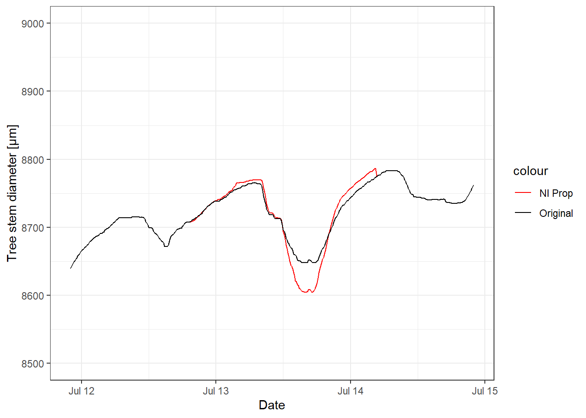
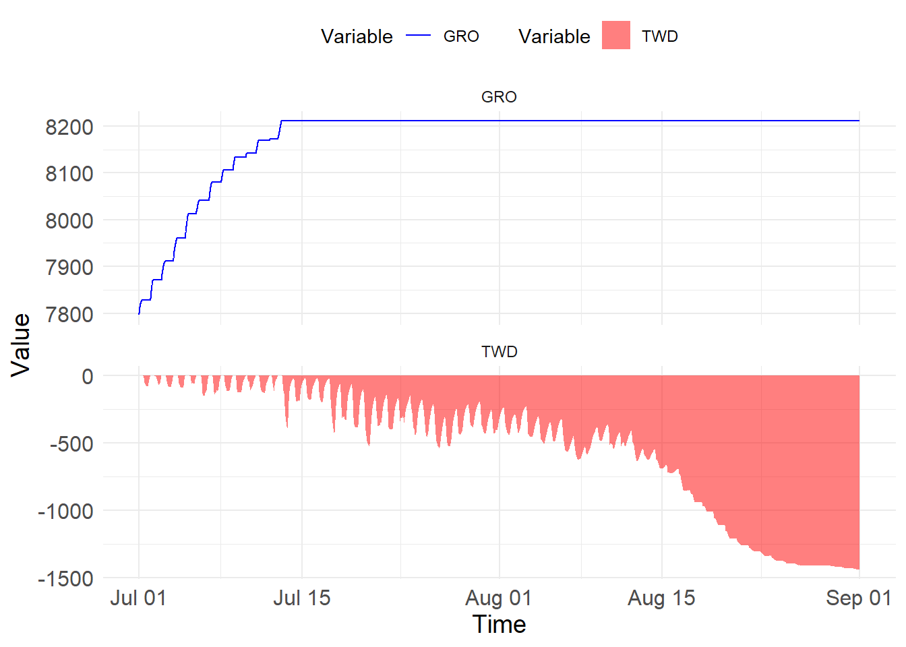

library(readr)
library(tidyr)
library(dplyr)
library(ggplot2)
library(dendRoAnalyst)Dendrometer processing in R
How do dendrometer data look like?
Let’s see…
Load required packages
Read in demo data
dendro <- read_csv("./Data/Demo_Dendrometer_GH.csv",
col_select = -1)New names:
Rows: 8928 Columns: 11
── Column specification
──────────────────────────────────────────────────────── Delimiter: "," dbl
(10): D19_D, D28_W, D31_D, D33_D, D39_W, D4_W, D43_D, D7_D, D15_W, D25_W dttm
(1): TIMESTAMP
ℹ Use `spec()` to retrieve the full column specification for this data. ℹ
Specify the column types or set `show_col_types = FALSE` to quiet this message.
• `` -> `...1`dendro$TIMESTAMP <- as.POSIXct(dendro$TIMESTAMP,
format="%Y-%m-%d %H:%M:%S")… and have a look at the demo data
dendro_long <- pivot_longer(dendro,
cols = 2:ncol(dendro),
values_to = "TSD",
names_to = "Tree.ID")
dendro_long$Treatment <- sub(".*(W|D).*", "\\1", dendro_long$Tree.ID)
ggplot(dendro_long) +
geom_line(aes(x = TIMESTAMP, y = TSD, color = Tree.ID)) +
facet_grid(Treatment ~ .) +
ylab("Tree stem diameter [µm]") + xlab("Date") +
theme_bw()Common issues in dendrometer data:
- Gaps
- Jumps (e.g. due to manual readjustment of the dendrometer)
- Outliers
Several R-Packages exist for preprocessing dendrometer data and deriving tree based metrics about growth or water status:
DendRoAnalyst(Aryal et al. 2020)
Treenetproc(Knüsel et al. 2021)
dendrometeR(Maaten et al. 2016)
Dendrometer processing with dendRoAnalyst

Additional new functions, e. g.:
- detrending (dm.detrend, mean.detrended.dm)
- calculating climate-growth relationships (mov.cor.dm)
Let’s inspect one dendrometer closer
dendro_D4W <- dendro %>%
select(TIMESTAMP, D4_W)
ggplot() +
geom_line(data = dendro_D4W,
aes(x = TIMESTAMP, y = D4_W)) +
ylab("Tree stem diameter [µm]") + xlab("Date") +
theme_bw()How can we get rid of this jump?
-> use function jump.locator
dendro_D4W_j <- jump.locator(dendro_D4W, v = 100)[1] "Jump information in D4_W"
# A tibble: 2 × 3
Index Jump_time Jump_value
<dbl> <dttm> <dbl>
1 6962 2023-08-18 08:10:00 -386.
2 6963 2023-08-18 08:20:00 -3469.ggplot() +
geom_line(data = dendro_D4W_j,
aes(x = TIME, y = D4_W), color = "red") +
geom_line(data = dendro_D4W,
aes(x = TIMESTAMP, y = D4_W)) +
ylab("Tree stem diameter [µm]") + xlab("Date") +
theme_bw()Repeat for all dendrometers
dendro_j <- jump.locator(dendro, v = 100)[1] "There is no jump in D19_D"
[1] "Jump information in D28_W"
# A tibble: 2 × 3
Index Jump_time Jump_value
<dbl> <dttm> <dbl>
1 8855 2023-08-31 11:40:00 -1314.
2 8856 2023-08-31 11:50:00 -5257.
[1] "There is no jump in D31_D"
[1] "Jump information in D33_D"
# A tibble: 6 × 3
Index Jump_time Jump_value
<dbl> <dttm> <dbl>
1 7715 2023-08-23 13:40:00 -587.
2 7716 2023-08-23 13:50:00 -2282.
3 7717 2023-08-23 14:00:00 -604.
4 7722 2023-08-23 14:50:00 -289.
5 7723 2023-08-23 15:00:00 -502.
6 7725 2023-08-23 15:20:00 129.
[1] "Jump information in D39_W"
# A tibble: 2 × 3
Index Jump_time Jump_value
<dbl> <dttm> <dbl>
1 8856 2023-08-31 11:50:00 -4539.
2 8857 2023-08-31 12:00:00 -4540.
[1] "Jump information in D4_W"
# A tibble: 2 × 3
Index Jump_time Jump_value
<dbl> <dttm> <dbl>
1 6962 2023-08-18 08:10:00 -386.
2 6963 2023-08-18 08:20:00 -3469.
[1] "There is no jump in D43_D"
[1] "There is no jump in D7_D"
[1] "Jump information in D15_W"
# A tibble: 4 × 3
Index Jump_time Jump_value
<dbl> <dttm> <dbl>
1 6962 2023-08-18 08:10:00 -146.
2 6963 2023-08-18 08:20:00 -1386.
3 6973 2023-08-18 10:00:00 -1557.
4 7716 2023-08-23 13:50:00 -207.
[1] "Jump information in D25_W"
# A tibble: 3 × 3
Index Jump_time Jump_value
<dbl> <dttm> <dbl>
1 6962 2023-08-18 08:10:00 -145.
2 6963 2023-08-18 08:20:00 -1346.
3 6973 2023-08-18 10:00:00 -3424.dendro_j_long <- pivot_longer(dendro_j,
cols = 2:ncol(dendro_j),
values_to = "TSD",
names_to = "Tree.ID")
dendro_j_long$Treatment <- sub(".*(W|D).*", "\\1", dendro_j_long$Tree.ID)
ggplot(dendro_j_long) +
geom_line(aes(x = TIME, y = TSD, color = Tree.ID)) +
facet_grid(Treatment ~ .) +
ylab("Tree stem diameter [µm]") + xlab("Date") +
theme_bw()Let’s fill the gaps…
Several options are available in dendRoAnalyst:
- dm.na.interpolation:
- seasonal
- cubic spline- network interpolation:
- niMethod = "linear"
- niMethod = "proportional"Let’s see how that looks like…
We delete some data and fill it with the different methods:
dendro_D28_W <- dendro_j %>%
select("TIME", "D28_W")
dendro_D28_W[1700:1900, 2] <- NAdm.na.interpolation cubic spline
dendro_D28_W_spline <- dm.na.interpolation(dendro_D28_W, resolution = 10,
fill = TRUE, method = "spline")
ggplot() +
geom_line(data = dendro_D28_W_spline,
aes(x = TIME, y = D28_W,
color = "Spline")) +
geom_line(data = dendro_j,
aes(x = TIME, y = D28_W,
color = "Original")) +
scale_color_manual(values = c("Spline" = "blue",
"Original" = "black")) +
ylab("Tree stem diameter [µm]") + xlab("Date") +
xlim(as.POSIXct("2023-07-12"), as.POSIXct("2023-07-15")) +
ylim(8500, 9000) +
theme_bw()dm.na.interpolation seasonal
dendro_D28_W_seasonal <- dm.na.interpolation(dendro_D28_W, resolution = 10,
fill = TRUE, method = "seasonal")
ggplot() +
geom_line(data = dendro_D28_W_seasonal,
aes(x = TIME, y = D28_W,
color = "Seasonal")) +
geom_line(data = dendro_j,
aes(x = TIME, y = D28_W,
color = "Original")) +
scale_color_manual(values = c("Seasonal" = "darkgreen",
"Original" = "black")) +
ylab("Tree stem diameter [µm]") + xlab("Date") +
xlim(as.POSIXct("2023-07-12"), as.POSIXct("2023-07-15")) +
ylim(8500, 9000) +
theme_bw()network.interpolation linear
create reference dataframe with gapfree data from the dendrometers of the same treatment (W)
dendro_W_ref <- dendro_j %>%
select("TIME", "D39_W", "D4_W", "D15_W", "D25_W")
dendro_D28_W_ni.lin <- network.interpolation(dendro_D28_W,
dendro_W_ref,
niMethod = "linear")
ggplot() +
geom_line(data = dendro_D28_W_ni.lin,
aes(x = TIME, y = D28_W,
color = "NI Lin")) +
geom_line(data = dendro_j,
aes(x = TIME, y = D28_W,
color = "Original")) +
scale_color_manual(values = c("NI Lin" = "goldenrod2",
"Original" = "black")) +
ylab("Tree stem diameter [µm]") + xlab("Date") +
xlim(as.POSIXct("2023-07-12"), as.POSIXct("2023-07-15")) +
ylim(8500, 9000) +
theme_bw()network.interpolation proportional
dendro_D28_W_ni.prop <- network.interpolation(dendro_D28_W,
dendro_W_ref,
niMethod = "proportional")
ggplot() +
geom_line(data = dendro_D28_W_ni.prop,
aes(x = TIME, y = D28_W,
color = "NI Prop")) +
geom_line(data = dendro_j,
aes(x = TIME, y = D28_W,
color = "Original")) +
scale_color_manual(values = c("NI Prop" = "red",
"Original" = "black")) +
ylab("Tree stem diameter [µm]") + xlab("Date") +
xlim(as.POSIXct("2023-07-12"), as.POSIXct("2023-07-15")) +
ylim(8500, 9000) +
theme_bw()
Compare all interpolation methods
ggplot() +
geom_line(data = dendro_D28_W_spline,
aes(x = TIME, y = D28_W,
color = "Spline")) +
geom_line(data = dendro_D28_W_seasonal,
aes(x = TIME, y = D28_W,
color = "Seasonal")) +
geom_line(data = dendro_D28_W_ni.prop,
aes(x = TIME, y = D28_W,
color = "NI Prop")) +
geom_line(data = dendro_D28_W_ni.lin,
aes(x = TIME, y = D28_W,
color = "NI Lin")) +
geom_line(data = dendro_j,
aes(x = TIME, y = D28_W,
color = "Original")) +
scale_color_manual(values = c("Spline" = "blue",
"Seasonal" = "darkgreen",
"NI Prop" = "red",
"NI Lin" = "goldenrod2",
"Original" = "black")) +
ylab("Tree stem diameter [µm]") + xlab("Date") +
xlim(as.POSIXct("2023-07-12"), as.POSIXct("2023-07-15")) +
ylim(8500, 9000) +
theme_bw()Repeat for whole dataset, but divide into treatments.
Check for missing data and subset dataframe accordingly.
dendro_W <- dendro_j %>%
select(TIME, ends_with("_W"))
sum(is.na(dendro_W))[1] 0dendro_D <- dendro_j %>%
select(TIME, ends_with("_D"))
sum(is.na(dendro_D))[1] 402dendro_D_mis <- dendro_D[, c("TIME",
names(dendro_D)[colSums(is.na(dendro_D)) > 0])]
head(dendro_D_mis)# A tibble: 6 × 3
TIME D19_D D33_D
<dttm> <dbl> <dbl>
1 2023-07-01 00:00:00 8120. 6655.
2 2023-07-01 00:10:00 8122. 6657.
3 2023-07-01 00:20:00 8124. 6657.
4 2023-07-01 00:30:00 8125. 6660.
5 2023-07-01 00:40:00 8128. 6661.
6 2023-07-01 00:50:00 8130. 6662.dendro_D_ref <- dendro_D[, colSums(is.na(dendro_D)) == 0]
head(dendro_D_ref)# A tibble: 6 × 4
TIME D31_D D43_D D7_D
<dttm> <dbl> <dbl> <dbl>
1 2023-07-01 00:00:00 7208. 7395. 7796.
2 2023-07-01 00:10:00 7209. 7396. 7797.
3 2023-07-01 00:20:00 7211. 7397. 7799.
4 2023-07-01 00:30:00 7213. 7399. 7801.
5 2023-07-01 00:40:00 7214. 7400. 7802.
6 2023-07-01 00:50:00 7216. 7401. 7804.interpolate missing data
dendro_D_i <- network.interpolation(dendro_D_mis,
dendro_D_ref,
niMethod = "proportional")
head(dendro_D_i)# A tibble: 6 × 3
TIME D19_D D33_D
<dttm> <dbl> <dbl>
1 2023-07-01 00:00:00 8120. 6655.
2 2023-07-01 00:10:00 8122. 6657.
3 2023-07-01 00:20:00 8124. 6657.
4 2023-07-01 00:30:00 8125. 6660.
5 2023-07-01 00:40:00 8128. 6661.
6 2023-07-01 00:50:00 8130. 6662.sum(is.na(dendro_D_i))[1] 0Check interpolation results
df_list <- list(dendro_W, dendro_D_ref, dendro_D_i)
dendro_i <- reduce(df_list, full_join, by = "TIME")
dendro_i_long <- pivot_longer(dendro_i,
cols = 2:ncol(dendro_i),
values_to = "TSD",
names_to = "Tree.ID")
dendro_i_long$Treatment <- sub(".*(W|D).*", "\\1", dendro_i_long$Tree.ID)
ggplot(dendro_i_long) +
geom_line(aes(x = TIME, y = TSD, color = Tree.ID)) +
facet_grid(Treatment ~ .) +
ylab("Tree stem diameter [µm]") + xlab("Date") +
theme_bw()Preprocessing is done :)
But what can we derive from the data?
-> Deeper understanding in growth responses or tree water relations
Several approaches:
Daily approach:
Calculates daily statistics like daily maximum, daily minimum, or amplitude
Stem-cycle approach:
Divides data into 3 different phases:
Shrinkage: when the current reading is less than the previous reading
Expansion: when the current reading is greater than the previous reading
Increment: when current reading exceeds previous maxima
Zero-growth approach:
Divides data into 2 different phases (Aryal et al. 2020):
Tree water deficit (TWD): “reversible shrinkage and expansion of the stem when current reading is less than previous maxima”
Increment (GRO): “irreversible expansion of the stem when the current reading is higher than previous maxima”
Daily approach
daily_data_D7_D <- daily.data(dendro_i, TreeNum = 8)
head(daily_data_D7_D) # A tibble: 6 × 9
DATE Min Time_min Max Time_max mean median amplitude Remarks
<date> <dbl> <chr> <dbl> <chr> <dbl> <dbl> <dbl> <chr>
1 2023-07-01 7742. 18:00:00 7830. 23:50:00 7793. 7804. 87.4 "*"
2 2023-07-02 7801. 17:20:00 7884. 23:50:00 7848. 7856. 83.6 "*"
3 2023-07-03 7826. 14:40:00 7923. 23:50:00 7870. 7876. 96.6 "*"
4 2023-07-04 7866. 17:50:00 7964. 23:50:00 7916. 7926. 97.8 "*"
5 2023-07-05 7949. 16:10:00 8025. 23:50:00 7986. 7991. 76.0 "*"
6 2023-07-06 7890. 12:10:00 8042. 05:20:00 7976. 7996. 152. "" phase.sc_D7_D <- phase.sc(df = dendro_i, TreeNum = 8)
head(phase.sc_D7_D[[1]],10)# A tibble: 10 × 8
Phases Start End Duration_h Duration_m
<dbl> <dttm> <dttm> <dbl> <dbl>
1 3 2023-07-01 00:00:00 2023-07-01 04:40:00 4.67 280
2 2 2023-07-01 04:40:00 2023-07-01 04:50:00 0.167 10
3 3 2023-07-01 04:50:00 2023-07-01 05:30:00 0.667 40
4 2 2023-07-01 05:30:00 2023-07-01 05:40:00 0.167 10
5 3 2023-07-01 05:40:00 2023-07-01 05:50:00 0.167 10
6 2 2023-07-01 05:50:00 2023-07-01 06:00:00 0.167 10
7 3 2023-07-01 06:00:00 2023-07-01 06:10:00 0.167 10
8 1 2023-07-01 06:10:00 2023-07-01 06:30:00 0.333 20
9 2 2023-07-01 06:30:00 2023-07-01 06:40:00 0.167 10
10 1 2023-07-01 06:40:00 2023-07-01 07:00:00 0.333 20
# ℹ 3 more variables: Magnitude <dbl>, rate <dbl>, DOY <dbl>head(phase.sc_D7_D[[2]],10)# A tibble: 10 × 3
TIME dm Phases
<dttm> <dbl> <dbl>
1 2023-07-01 00:00:00 7796. NA
2 2023-07-01 00:10:00 7797. 3
3 2023-07-01 00:20:00 7799. 3
4 2023-07-01 00:30:00 7801. 3
5 2023-07-01 00:40:00 7802. 3
6 2023-07-01 00:50:00 7804. 3
7 2023-07-01 01:00:00 7805. 3
8 2023-07-01 01:10:00 7807. 3
9 2023-07-01 01:20:00 7808. 3
10 2023-07-01 01:30:00 7810. 3Stem-cycle approach
# extract first date of dataframe and recalculate into DOY
first_row <- head(dendro_i, 1)
first_date <- as.Date(first_row$TIME)
first_day_of_year <- as.numeric(format(first_date, "%j"))
# extract last date of dataframe and recalculate into DOY
last_row <- tail(dendro_i, 1)
last_date <- as.Date(last_row$TIME)
last_day_of_year <- as.numeric(format(last_date, "%j"))
plot_SC_output(SC_output = phase.sc_D7_D,
DOY = c(first_day_of_year, last_day_of_year),
Year = 2023)Zero-growth approach
phase.zg_D7_D <- phase.zg(df = dendro_i, TreeNum = 8)
head(phase.zg_D7_D[[1]],10)# A tibble: 10 × 12
Phases Start End Duration_h Magnitude rate
<dbl> <dttm> <dttm> <dbl> <dbl> <dbl>
1 2 2023-07-01 00:00:00 2023-07-01 06:20:00 6.33 32.0 5046.
2 1 2023-07-01 06:20:00 2023-07-01 23:40:00 17.3 NA NA
3 2 2023-07-01 23:40:00 2023-07-02 06:40:00 7 43.0 6148.
4 1 2023-07-02 06:40:00 2023-07-02 22:40:00 16 NA NA
5 2 2023-07-02 22:40:00 2023-07-03 04:40:00 6 36.5 6077.
6 1 2023-07-03 04:40:00 2023-07-03 04:50:00 0.167 NA NA
7 2 2023-07-03 04:50:00 2023-07-03 05:50:00 1 1.78 1776.
8 1 2023-07-03 05:50:00 2023-07-03 23:10:00 17.3 NA NA
9 2 2023-07-03 23:10:00 2023-07-04 06:10:00 7 46.5 6641.
10 1 2023-07-04 06:10:00 2023-07-04 23:40:00 17.5 NA NA
# ℹ 6 more variables: max.twd <dbl>, Max.twd.time <dttm>, twd.severity <dbl>,
# Avg.twd <dbl>, STD.twd <dbl>, DOY <dbl>head(phase.zg_D7_D[[2]],10)# A tibble: 10 × 5
TIME dm Phases TWD GRO
<dttm> <dbl> <dbl> <dbl> <dbl>
1 2023-07-01 00:00:00 7796. 2 0 7796.
2 2023-07-01 00:10:00 7797. 2 0 7797.
3 2023-07-01 00:20:00 7799. 2 0 7799.
4 2023-07-01 00:30:00 7801. 2 0 7801.
5 2023-07-01 00:40:00 7802. 2 0 7802.
6 2023-07-01 00:50:00 7804. 2 0 7804.
7 2023-07-01 01:00:00 7805. 2 0 7805.
8 2023-07-01 01:10:00 7807. 2 0 7807.
9 2023-07-01 01:20:00 7808. 2 0 7808.
10 2023-07-01 01:30:00 7810. 2 0 7810.plot_ZG_output(ZG_output = phase.zg_D7_D,
DOY = c(first_day_of_year, last_day_of_year),
Year = 2023)
Explore growth during extreme climate extremes
Locate maxima of TWD periods
# Locating the maxima of TWD periods
twd_max_D7_D <- twd.maxima(dendro_i, TreeNum = 8, smoothing = 5)
head(twd_max_D7_D)# A tibble: 6 × 7
Start.time End.time TIME Phases TWD
<dttm> <dttm> <dttm> <dbl> <dbl>
1 2023-07-01 06:20:00 2023-07-01 23:40:00 2023-07-01 18:00:00 1 85.7
2 2023-07-02 06:40:00 2023-07-02 22:40:00 2023-07-02 08:40:00 1 5.33
3 2023-07-02 06:40:00 2023-07-02 22:40:00 2023-07-02 17:20:00 1 71
4 2023-07-03 05:50:00 2023-07-03 23:10:00 2023-07-03 14:40:00 1 85.3
5 2023-07-03 05:50:00 2023-07-03 23:10:00 2023-07-03 17:30:00 1 85.2
6 2023-07-04 06:10:00 2023-07-04 23:40:00 2023-07-04 14:20:00 1 90.7
# ℹ 2 more variables: Duration_from_start <drtn>, twd.number <int>read in some additional climate data
clima <- read_csv("./Data/Demo_Climate_GH.csv",
col_select = -1) New names:
Rows: 15053 Columns: 2
── Column specification
──────────────────────────────────────────────────────── Delimiter: "," dbl
(1): Tair dttm (1): TIME
ℹ Use `spec()` to retrieve the full column specification for this data. ℹ
Specify the column types or set `show_col_types = FALSE` to quiet this message.
• `` -> `...1`clima$TIME <- as.POSIXct(clima$TIME, format="%Y-%m-%d %H:%M:%S")
clima <- clima %>%
filter(TIME >= as.POSIXct("2023-07-01 00:00:00", tz = "UTC") &
TIME <= as.POSIXct("2023-08-31 23:50:00", tz = "UTC"))
# calculate daily climate data
clima_daily <- clima %>%
group_by(TIME = as.Date(TIME)) %>%
summarize(max_temp = max(Tair))Explore growth after extreme climate event
clim.twd(dendro_i,
clima_daily,
dailyValue = "max",
thresholdClim = ">30",
thresholdDays = ">3",
showPlot = TRUE)[1] "The adverse climatic periods are listed below:"
[1] 1 2 3
[1] "Please choose periods' id from the list. Please press enter two times when you are done."# A tibble: 28 × 12
TIME D28_W D39_W D4_W D15_W D25_W D31_D D43_D D7_D D19_D D33_D IDs
<date> <dbl> <dbl> <dbl> <dbl> <dbl> <dbl> <dbl> <dbl> <dbl> <dbl> <dbl>
1 2023-07-07 0 0 0 0 0 0 0 0 0 0 1
2 2023-07-08 65.1 67.3 55.6 52.0 46.7 44.2 53.8 25.4 38.1 25.2 1
3 2023-07-09 118. 124. 101. 108. 81.2 91.3 117. 54.0 75.7 71.9 1
4 2023-07-10 162. 169. 147. 147. 145. 137. 156. 62.6 102. 94.5 1
5 2023-07-11 203. 211. 191. 204. 172. 183. 210. 88.7 140. 140. 1
6 2023-07-12 247. 253. 227. 228. 261. 226. 253. 99.2 158. 166. 1
7 2023-07-14 0 0 0 0 0 0 0 0 0 0 2
8 2023-07-15 29.3 33.6 29.1 50.6 29.6 19.9 16.7 1.37 16.1 14.4 2
9 2023-07-16 70.8 81.7 77.1 103. 91.7 46.5 36.6 4.77 25.3 33.7 2
10 2023-07-17 106. 99.4 109. 137. 114. 68.7 54.6 1.13 34.5 54.9 2
# ℹ 18 more rowsCorrelations with climate data
mov.cor.dm(dendro_i, clima_daily, TreeNum = 8, win_size = 18, cor_method = "pearson")$max_temp
# A tibble: 62 × 3
TIME corr p_val
<date> <dbl> <dbl>
1 2023-07-01 NA NA
2 2023-07-02 NA NA
3 2023-07-03 NA NA
4 2023-07-04 NA NA
5 2023-07-05 NA NA
6 2023-07-06 NA NA
7 2023-07-07 NA NA
8 2023-07-08 NA NA
9 2023-07-09 NA NA
10 2023-07-10 0.621 0.00451
# ℹ 52 more rows
attr(,"class")
[1] "mov.cor"References
Aryal, Sugam, Martin Häusser, Jussi Grießinger, Zexin Fan, and Achim Bräuning. 2020. ““dendRoAnalyst”: A Tool for Processing and Analysing Dendrometer Data.” Dendrochronologia 64 (December): 125772. https://doi.org/10.1016/j.dendro.2020.125772.
Knüsel, Simon, Richard L. Peters, Matthias Haeni, Micah Wilhelm, and Roman Zweifel. 2021. “Processing and Extraction of Seasonal Tree Physiological Parameters from Stem Radius Time Series.” Forests 12 (6): 765. https://doi.org/10.3390/f12060765.
Maaten, Ernst van der, Marieke van der Maaten-Theunissen, Marko Smiljanić, Sergio Rossi, Sonia Simard, Martin Wilmking, Annie Deslauriers, Patrick Fonti, Georg von Arx, and Olivier Bouriaud. 2016. “dendrometeR: Analyzing the Pulse of Trees in r.” Dendrochronologia 40 (December): 12–16. https://doi.org/10.1016/j.dendro.2016.06.001.